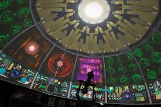

Integrando o Centro Dragão do Mar de Arte e Cultura, o Planetário Rubens de Azevedo é uma maravilha tecnológica que fortalece as atividades turístico-educacionais do Ceará. O fascinante mundo da realidade virtual proporciona aos visitantes uma incrível visão dos astros com projetores de última geração. Agora equipado com projetores da marca alemã Carl Zeiss - modelo Skymaster ZKP 4 LED - Velvet Duo e Sistema PowerDome, controlados por um conjunto de oito computadores de última geração, que possibilitam a exibição de imagens de alta qualidade em projeção Full Dome (com projeção 180º x 360º na cúpula), o Rubens de Azevedo é o planetário digital mais moderno da América Latina.
Sextas
18h - ABC do Sistema Solar (sessão infantil)
19h - ALMA - e o Universo Invisível (sessão juvenil-adulta)
Sábados e domingos
17h - ABC do Sistema Solar (sessão infantil)
18h - Explorando o Universo (sessão infantil)
19h - ALMA - e o Universo Invisível (sessão juvenil-adulta)
20h - O Deus Kim e a Astronomia Maya (sessão juvenil-adulta)
Os ingressos para as sessões custam R$ 10,00 a meia e R$ 20,00 a inteira, podendo ser adquiridos também por meio de compra antecipada no site da Sympla Bileto (site.bileto.sympla.com.br/dragaodomar), além da bilheteria física no Dragão.
ABC do Sistema Solar (sessão infantil)

Três crianças estão observando as estrelas quando percebem uma "estrela cadente" e logo uma delas faz um pedido: o desejo de fazer uma viagem até a Lua. De repente, as crianças são teletransportadas para uma nave espacial chamada "Observador". Após superar o medo inicial, elas fazem uma rica viagem pelo Sistema Solar, visitando os planetas. Durante a viagem, passam por Marte e Vênus, e ainda se aventuram por dentro dos anéis de Saturno. No final, fazem uma perigosa aproximação do Sol.
ALMA - e o Universo Invisível (sessão juvenil-adulta)
.png)
A sessão mostra ao público como os cientistas descobrem a existência de objetos que não são percebidos pelo olho humano, apresentando um poderoso instrumento de pesquisa astronômica - o radiotelescópio. Uma enorme rede desses equipamentos, chamada de ALMA, foi instalada no deserto de Atacama, no Chile. O ALMA é composto por 66 antenas de alta precisão, cada uma com um diâmetro de 12 metros, que trabalham juntas como um único telescópio gigante. É uma das instalações astronômicas mais avançadas do mundo, capaz de observar o universo em ondas milimétricas e submilimétricas, permitindo a análise de objetos cósmicos frios, como nuvens moleculares, estrelas em formação e planetas.
Explorando o Universo (sessão infantil)
.jpeg)
Com uma linguagem simples, a sessão apresenta fundamentos de Astronomia através de uma história de suspense. O "fantasma" de Galileu aparece e leva o público a uma fascinante viagem pelo tempo e espaço. As observações de Galileu deram início a novas pesquisas que, finalmente, comprovaram as ideias de Copérnico e Kepler sobre o Universo. Além dos fatos históricos, a sessão mostra o conhecimento atual sobre a estrutura do Universo e do nosso Sistema Solar. Uma perfeita combinação de projeção clássica de planetário com imagens digitais full dome.
O Deus Kim e a Astronomia Maya (sessão juvenil-adulta)

Com projeções digitais de alta definição, a sessão mostra uma enorme variedade de cores e sons. Na Arqueoastronomia Maia, os observadores do universo fazem uma viagem por seis sítios arqueológicos maias: San Gervasio, Chichen Itzá, Uxmal, Edzana, Palenque e Bonampak, através dos quais o espectador é imerso num mundo de conhecimento maia sobre a importância das orientações de seus templos em relação à dinâmica celeste do sol, da lua e de Vênus.
Noite das Estrelas
Todos os meses, sempre nas noites de Quarto Crescente Lunar, o planetário disponibiliza telescópios ao público em geral para observação astronômica de crateras da lua, planetas, nebulosas, etc. A participação é gratuita, por ordem de chegada. A realização do programa fica condicionada às condições de visibilidade, sendo interrompida se o céu estiver nublado. Dia 26 de maio, das 19h às 21h, no Espaço Mix (Rua Dragão do Mar, 81 - Praia de Iracema). Acesso gratuito e livre.
Todos os cuidados seguem reforçados para preservar a saúde dos colaboradores e frequentadores do Planetário Rubens de Azevedo. Em decorrência do aumento do número de casos de gripe, recomendamos que os seus visitantes sigam com o calendário vacinal atualizado e preservem o uso de máscara. Não é permitida a entrada após o início da sessão. Somente será permitida a entrada de crianças acompanhadas de adultos. Não é permitido o consumo de alimentos e bebidas no interior do Planetário.
Além das sessões abertas ao público, o Planetário Rubens de Azevedo disponibiliza horários para agendamento de visitas de grupos escolares. Com duração média de 40 minutos, a visita é voltada para grupo com mínimo 20 pessoas e máximo de 60 pessoas, sendo gratuitas para escolas públicas (às terças e quintas, 09h e 10h, 14h e 15h) e custando R$ 10,00 por aluno de escolas particulares (às quartas e sextas, 09h, 10h, 14h e 15h). O agendamento deve ser feito por telefone (85) 3488-8639 ou pelo formulário https://www.planetariorubensdeazevedo.com.br/agendamento.